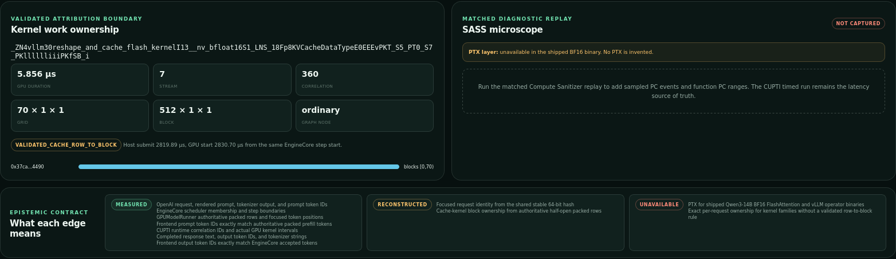

Between “request in” and “tokens out”, an inference server is a black box.
Requests lose their identity
The scheduler batches requests; the model runner packs and reorders their tokens into GPU rows. Scheduler order is not GPU row order.
Kernels have no owner
Profilers show CUDA kernels, but not whose work they are — and CUDA Graphs replay them with little host-side visibility.
So basic questions have no direct answer: which request is this GPU work for? What did this prompt cost on the GPU? Why did this request slow down?
GPU Observer2
What it does
Keep one request’s identity all the way down to the GPU.
Promptchat request frontend
→
Tokensexact token IDs tokenizer
→
Engine stepscheduler slices vLLM V1
→
Packed rowspost-compaction GPUModelRunner
→
GPU kernelsactual intervals CUPTI
→
KV blocksrequest-owned Compute Sanitizer
Hot path stays cheap: fixed-size records into bounded lock-free rings — no JSON, locks or allocation in the inference process.
Joins are explicit: each hop is matched on authoritative identifiers and timestamps, and each states its precision limit.
GPU Observer3
Live view
Type a prompt, watch it become GPU work.
Tokenized prompt → engine step and phase → packed rows → the 11 kernel stages of one transformer layer, lit by real CUPTI launches and repeated ×40 per token. Kernel calls are split into thinking and response tokens.
GPU Observer4
Why this is hard
Three things break naive attribution.
Rows get reordered
vLLM compacts its batch by moving requests into freed rows. Only the post-compaction layout says which row is whose.
Graphs hide launches
Under CUDA Graphs, kernels replay on the device without ordinary host launches; correlation must be graph-node aware.
Tools can’t coexist
CUPTI and Compute Sanitizer compete for one subscriber slot on this stack, so timing and block events come from two explicit modes.
GPU Observer never turns temporal overlap into ownership: a request owns a block only when an authoritative row range contains it.
GPU Observer5
Try it yourself · no GPU needed
Sealed traces: one request’s complete causal record.

Real capture from the DGX Spark: 1 focused request with 7 concurrent requests, 65 engine steps, 2,600 GPU intervals of the KV-cache write kernel. harsh4786.github.io/gpu-observer
GPU Observer6
Result 1 · EXP-0019
Per-request KV-cache block ownership, observed directly on the device.
7,560device block-entry events under CUDA Graph replay
6,400request-owned blocks, plus 1,160 padding blocks
Scope: reshape_and_cache_flash_kernel, single-stream decode suffix, Qwen3-14B BF16 on GB10. Not claimed: attention, GEMM or fused kernels; multi-stream graphs; other models or stacks.
GPU Observer7
Result 2 · EXP-0020
The same requests, joined to real GPU kernel intervals.
1,400target-kernel activities under async CUDA Graphs
40 / stepexactly one per transformer layer, every step
0semantic loss, CUPTI drops or correlation misses
64 nsclock-calibration uncertainty, zero offset drift
Scope: request rows → CUDA correlation IDs → actual CUPTI intervals for the same kernel family. Block counts in this run are inferred from rows and launch geometry; direct block evidence is EXP-0019.
GPU Observer8
Result 3 · EXP-0015 overhead study
No instrumentation setting is distinguishable from unmodified vLLM.
The honest claim is a bound: overhead is below this method’s ~0.5% resolution. Execution order alone explained 92% of throughput variance (−6.4% from first run to last); it was corrected for and is documented, not hidden.
GPU Observer9
Honest by construction
Every value on screen says how it was obtained.
measured
Emitted directly by an observer: scheduler slices, packed rows, CUPTI kernel intervals, device block events.
reconstructed
Joined from measured identifiers and timestamps — e.g. block ownership from authoritative row ranges.
matched
Validated against an independent source, such as a replay with the same fingerprint.
unavailable
Shown as missing, never invented — e.g. instruction-level data the shipped binaries don’t expose.
GPU Observer10
Limits and next steps
What is proven today, and what comes next.
Limits
Exact ownership for one kernel family, single-stream graph replay.
Live kernel view is specific to Qwen3-14B’s layer shape.
Live system is pinned to DGX Spark and this container image.
Sealed traces are bounded to ~90 output tokens by a CUPTI table cap.
Next
Discover kernel structure from captures, so any model renders.
Extend ownership to more kernel families and multi-stream batches.
A recorded replay of the live view that anyone can run.
One logged closed-loop action that improves a declared SLO.
GPU Observer11
Timeline and links
Built on a pre-event foundation; stated plainly.
Aug 19 – Sep 9
Foundation: bounded transport, vLLM semantic events, CUPTI and Compute Sanitizer probes, the joins, and the experiments on the previous slides.
Sep 10 – 16 · event
Live graph flow from the chat box into the tokenized prompt; diagnosed the shadow view’s batched-delivery join and made it opt-in; public hosted viewer; this submission.